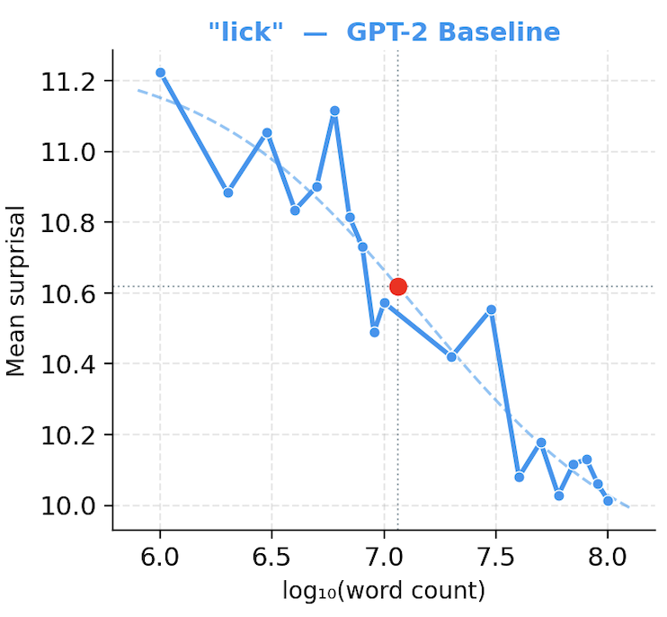
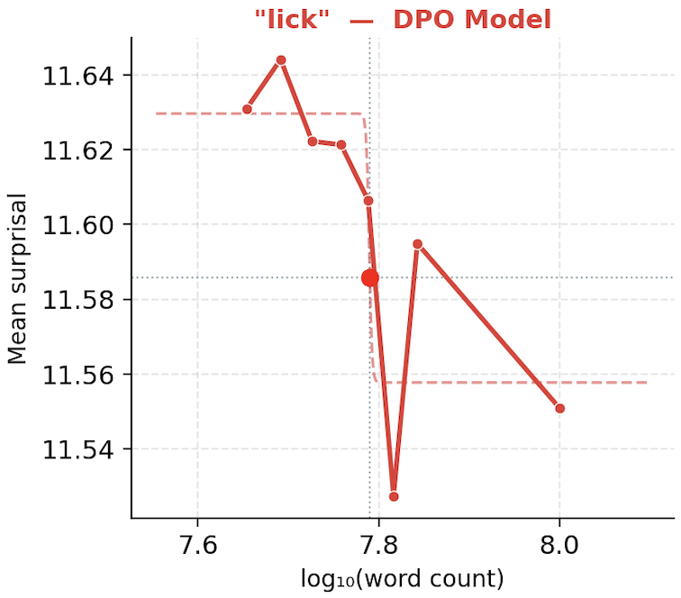

Results
Current quantitative results are from AoA-style surprisal analysis (baseline vs DPO model). Additional sweep-level AoA comparisons are in progress.
Finding 1: ΔSurprisal Shift
Mean Δsurprisal per word is lower for the DPO model (0.271) than baseline (2.067), indicating a different word-learning profile under fine-tuning.
Finding 2: Final Surprisal Tradeoff
Mean final surprisal is higher for the DPO model (11.92) than baseline (8.93), so improvements in trajectory-style metrics must be interpreted with this cost in mind.
Finding 3: Qualitative Stability Still Matters
AoA metrics are informative, but generation quality issues (collapse/noisy outputs in some runs) remain a key limitation for interpreting child-like behavior claims.
AoA Methodology
We operationalize lexical acquisition with surprisal, defined as the negative log probability of a target word in context.
Intuitively, words the model has learned receive lower surprisal over training.
Surprisal(w) = -log2 P(w | context)
Using CDI vocabulary targets, we track surprisal over checkpoints, fit sigmoid-like learning curves, and derive model AoA estimates for comparison with human AoA norms.
Charts
AoA visualization for the target word lick: GPT-2 baseline vs DPO model across token-count scale.

Figure 2. (GPT-2 baseline): for the CDI word lick, mean surprisal decreases gradually as log word count increases, showing a steadier learning trajectory.
The baseline also shows a broader overall reduction in surprisal (about 11.2 to 10.0).

Figure 3. (DPO model): mean surprisal also trends downward, but with sharper local changes rather than the same steady decline.
Its overall reduction is narrower (about 11.64 to 11.54), suggesting a different acquisition pattern for this probe word.
Evaluation Table (Current Metrics)
| Metric |
GPT-2 Baseline |
DPO Model |
SFT + DPO |
| Mean Δsurprisal / word |
2.067 |
0.271 |
0.723 |
| Mean final surprisal |
8.93 |
11.92 |
10.849 |
AoA-oriented metrics from the latest baseline-vs-DPO comparison run.
Core Question
Can a pipeline using corpus pretraining, TF-IDF-supervised keyword extraction, and DPO, replicate the telegraphic
speech acquisition trajectory observed in early child language development?
Setup
GPT-2 speaker + RoBERTa listener + DPO
Status
Proof-of-concept pipeline implemented, results pending full hyperparameter evaluation
Introduction
Modern language models do not naturally pass through the developmental stages observed in children.
TeleSpeak treats this as a structured learning problem, testing a three-stage pipeline built on GPT-2: pretraining on the BabyLM 100M corpus,
SFT on TF-IDF keyword extracts to induce content-word selectivity, and DPO with a decaying length term to
refine meaning-preserving compression. We evaluate the pipeline using AoA scores across all three checkpoints, comparing the model's
word-learning order against developmental norms from child language research.
Target User and Stakeholder
The immediate audience is researchers and mentors interested in cognitively motivated language modeling, efficient learning, and reinforcement-learning-based sequence training.
The broader stakeholder is anyone evaluating whether developmental language phenomena can be reproduced with transparent training objectives instead of hand-built rules.
Scope
We focus on a narrow, testable claim: whether a speaker optimized for semantic fidelity plus time-varying brevity pressure will move toward shorter outputs.
This project is about emergent production behavior, not full child-language acquisition.
Out of Scope
We are not claiming that the current model captures syntax development, multimodal grounding, caregiver interaction, or developmental timelines.
Those would require additional supervision, richer environments, and stronger behavioral evaluation than this capstone currently includes.
Methods
Our pipeline has three stages: unsupervised pretraining, SFT, and DPO.
The same GPT-2 policy model is carried through all stages, while a RoBERTa-based listener is used in DPO to construct chosen/rejected pairs.
Data
We use two data subsets across stages. Stage 0 pretraining uses the full BabyLM `train_100M` corpus (mixed sources). Stage 1 SFT and Stage 2 DPO use a 40,000-passage subset from Simple English Wikipedia for domain-consistent summarization.
Source data directory: BabyLM OSF.
{"id": int, "source": str, "passage": str}
Policy Model (Speaker)
GPT-2 is initialized with random weights and trained from scratch to track the full acquisition trajectory. The same model instance is used in pretraining, SFT, and DPO.
Listener Model
RoBERTa-large is used with BERTScore during DPO only. Given two candidate summaries, the listener scores each against the source passage and labels chosen vs rejected.
Preference Generation
For each prompt, the speaker samples two candidates with different seeds, top-p sampling, and temperature.
We apply 2-gram Jaccard filtering: if similarity exceeds `max_pair_similarity`, one candidate is regenerated (up to `max_resample_tries`); unresolved near-duplicates are discarded.
What We Built
Data preprocessing, candidate generation, listener scoring, DPO training code, TF-IDF keyword directed SFT, and experiment tracking are all assembled in this repo as a single end-to-end training workflow.
What We Reused
We rely on BabyLM-style data framing, GPT-2 and RoBERTa checkpoints, BERTScore-style semantic comparison, and standard experiment logging tooling rather than building those foundations from scratch.
Figure 1. (Pipeline model): Diagram illustrating the training pipeline implemented to operationalize telegraphic-speech in language models.
SFT Stage
SFT trains the model with standard cross-entropy on keyword summaries extracted from each passage using TF-IDF.
This stage teaches the model to produce compact keyword-style outputs before preference optimization.
score(t) = (1 + log tf(t)) * idf(t)
Prompt format:
"Keywords summary. Text: <passage_text> Output:<keywords>"
In our pipeline, SFT bridges unsupervised language pretraining and DPO by providing structured summarization behavior that DPO can refine.
DPO Stage
DPO trains on pairs of candidate summaries labeled as chosen/rejected by the listener.
The model is updated to increase probability on chosen outputs and decrease probability on rejected outputs, with an added decaying brevity pressure.
SFT and DPO work in conjunction: SFT gives the model a stable keyword-summary format, and DPO then reshapes that behavior using semantic preference signals and length control.
DPO Objective
In Stage 2, DPO combines preference learning and a decaying length term:
logits = beta * pref_logits + alpha(t) * len_adv
L = -log(sigmoid(logits))
pref_logits = (log pi_theta(y_c|x) - log pi_theta(y_r|x))
- (log pi_ref(y_c|x) - log pi_ref(y_r|x))
len_adv = (len_r - len_c) / (len_r + len_c + epsilon)
alpha(t) = alpha_0 * exp(-k * t)
Here, `beta` controls preference strength, `len_adv` rewards concise chosen outputs, and `alpha(t)` decays over training so semantic preference carries more weight later.
Dataset and Validity Notes
We separate data by stage: full mixed `train_100M` for pretraining, then a 40,000-passage Simple English Wikipedia subset for SFT and DPO. This controls domain during fine-tuning while preserving broad language exposure in pretraining.
- Stage split: Stage 0 pretraining on full mixed corpus; Stage 1/2 on SimpleWiki subset.
- Split protocol: train/validation split with fixed seed (0.1 validation in current runs) so comparisons are reproducible.
- Unit of supervision: preference pairs between two candidate summaries of the same passage.
- Validity concern: semantic overlap metrics can overestimate quality when two weak candidates share surface vocabulary.
- Leakage control: evaluate on held-out passages and keep fixed prompt sets separate from training pair construction.
Evaluation Plan (Explicit Protocol)
Our main evaluation is Age of Acquisition (AoA), following the BabyLM evaluation pipeline. We use AoA because it directly tests our hypothesis about word-learning trajectory, rather than only final-task fluency.
- Ground-truth vocabulary norms: MacArthur-Bates CDI / Wordbank early-childhood word list.
- Core signal: word surprisal across checkpoints; lower surprisal indicates higher familiarity.
- AoA estimate: fit sigmoid learning curves per word and compare model-derived AoA against human AoA rankings.
- Primary reported metrics: mean Δsurprisal per word and mean final surprisal.
- Baseline comparison: BabyLM official pretrained GPT-100M checkpoint vs our DPO model under the same AoA evaluation procedure.
- Ablations (ongoing): remove listener signal, remove/flatten length decay, and vary pair-filter thresholds.
Limitations and Failures
- Shorter outputs may still come from generic compression instead of robust child-like content selection.
- All three pipeline stages are undertrained due to compute constraints, and only three checkpoints are available for AoA evaluation, limiting the strength of conclusions.
- BERTScore preference signal is weak for telegraphic outputs — when both candidates are very short, scores are too close to provide reliable preference discrimination.
- Failure modes are unstable across runs: earlier token collapse shifted to function-word drift (for example "the/./in"), still with low semantic fidelity.
- Mixed-domain training data introduces domain shift; behavior on conversational-style sources may differ from encyclopedia-like passages.
Next Steps
- Replace BERTScore with ROUGE-1 F1 or TF-IDF cosine similarity as the listener scoring metric — these better discriminate between short telegraphic candidates where BERTScore collapses to near-identical scores.
- Scaling up to larger models, using a more robust model with higher number of parameters would produce more varied output and likely do better at escaping the telegraphic phase.
- Increase SFT training epochs and experiment with TF-IDF keyword threshold to produce a stronger telegraphic prior before DPO begins, reducing reliance on DPO to induce content-word selectivity from scratch.
Implications
- A curriculum-style training pipeline can operationalize cognitive developmental stages in a language model, offering a reproducible framework for testing hypotheses about language acquisition.
placeholder
- The speaker-listener preference framework offers a computational analog to caretaker feedback in child language development, suggesting that social feedback mechanisms in acquisition may be modelable with learned reward signals.
Artifacts and Reproducibility
Run Path
pip install -r requirements.txt
python speaker_listener_rl/training/dpo_with_listener_wandb.py
These commands show the intended workflow. Final deployment artifacts and experiment outputs will be linked here after the evaluation sweep completes.
Conclusion
Our project presents a three-stage training pipeline, unsupervised pretraining, TF-IDF keyword SFT, and DPO with a speaker-listener framework,
as a proof-of-concept framework for operationalizing telegraphic speech stage of child language acquisition in a neural language model. By
using TF-IDF keyword to induce content-word selectivity and DPO with decaying length penalty to refine meaning preserving compression. The pipeline
provides a reproducible method for testing hypotheses about language emergence in language models without explicitly specified linguistic rules.
Evaluation via AoA scores across checkpoints offers a principled way to compare model's word-learning trajectory against developmental norms from child
language research, bridging contemporary NLP methodology with a human approach to language acquisition. While compute constraints limit the quality of our results,
we have a loose idea of the effectivity of combining SFT with DPO for language learning. The results from this work demonstrate the feasibility of this approach
and welcome further investigation. Future work incorporating stronger preference signals such as ROUGE-1 or TF-IDF cosine similarity, additional training compute,
and evaluation on child-directed speech corpora such as CHILDES would allow for more definitive claims about the pipeline's ability to replicate developmental language phenomena.
Acknowledgements
We thank our mentor Dr. Alex Warstadt for his guidance and feedback throughout this project.
This work used computing resources available through the National Research Platform (NRP) at the University of California, San Diego.
References
- BabyLM Challenge (shared task datasets and constraints): https://osf.io/ryjfm/.
- Rafailov et al. (2023). Direct Preference Optimization.
- Zhang et al. (2020). BERTScore: Evaluating text generation with contextual embeddings.
- Radford et al. (2019). Language Models are Unsupervised Multitask Learners (GPT-2).
- Liu et al. (2019). RoBERTa: A Robustly Optimized BERT Pretraining Approach.
- Wolf et al. (2020). Transformers: State-of-the-Art Natural Language Processing (Hugging Face).
- Biewald (2020). Weights & Biases experiment tracking.
- Padovani et al. (2025). Reinforcement-learning approaches in BabyLM submissions.
- Stopler et al. (2025). Text-game style RL framing for language learning.
- Lazaridou et al. (2016). Multi-agent communication and reference games.